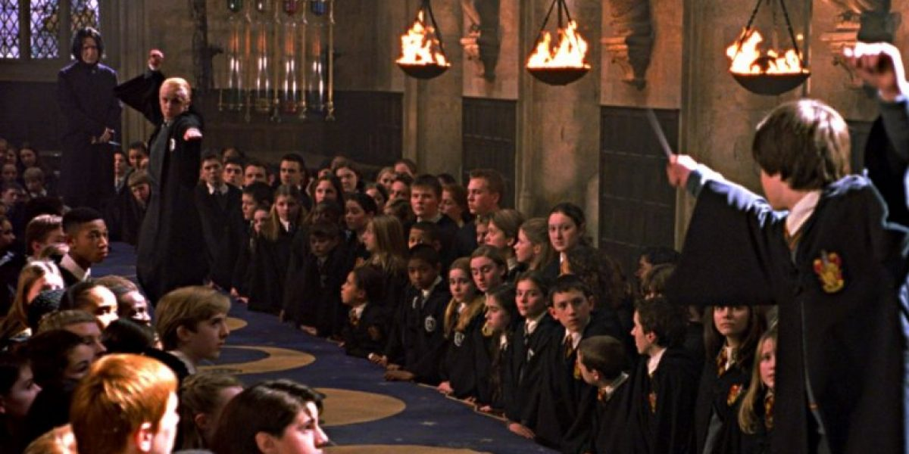
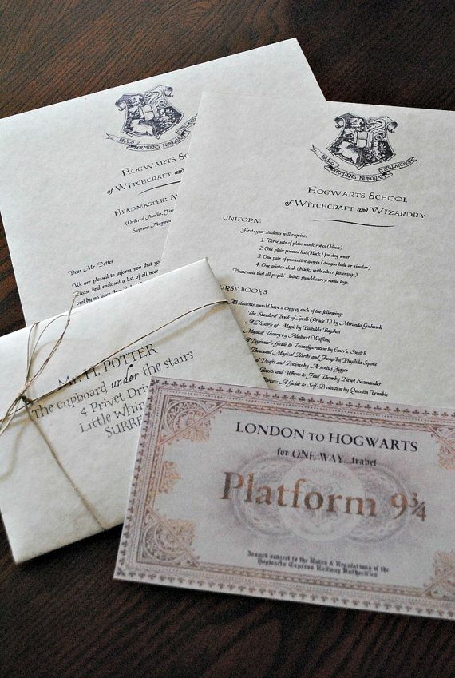
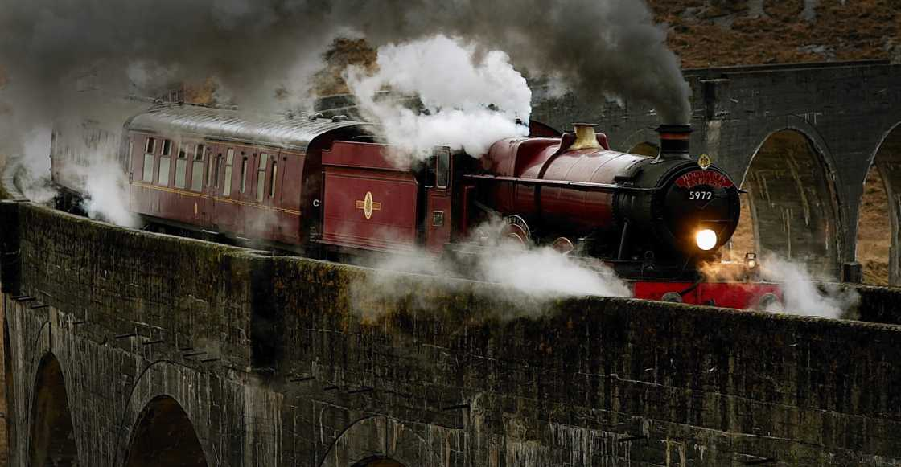
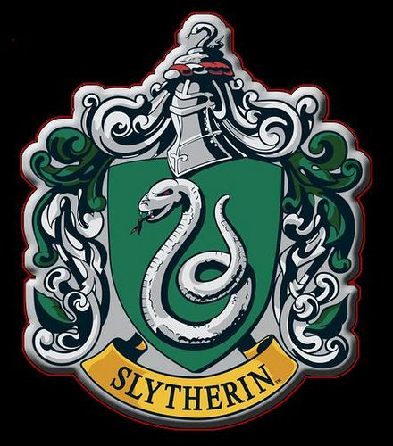
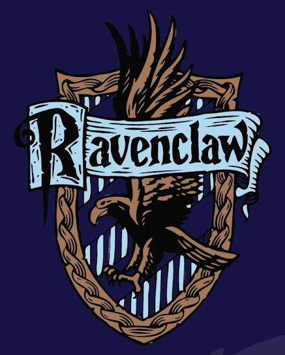
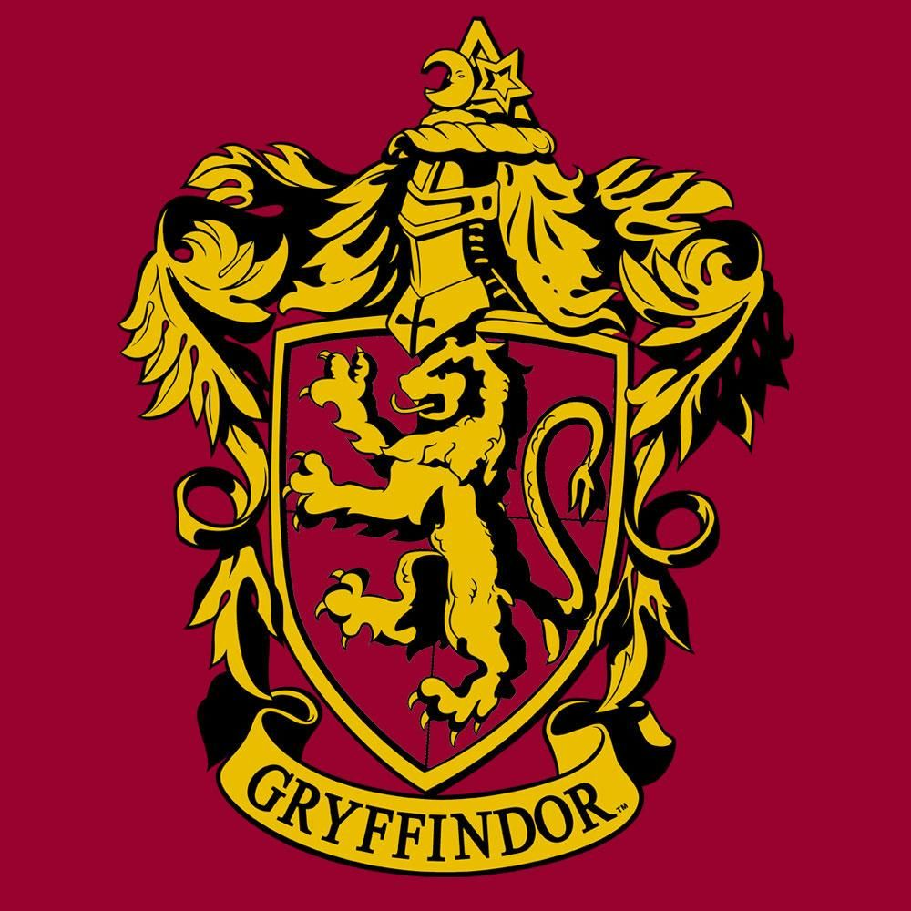
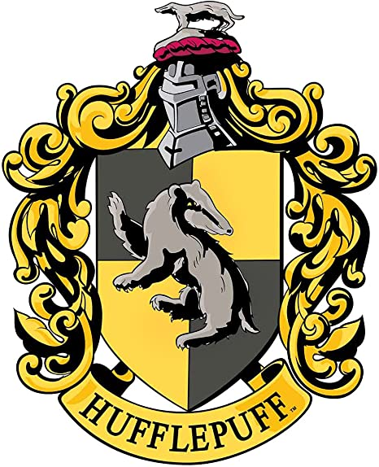

Colegio Hogwarts, Magia y Hechicería
El Colegio Hogwarts de Magia y Hechicería es un internado mágico ubicado en Escocia. El castillo se ubica en unas montañas cercanas a un lago. La localización exacta no ha sido descubierta ya que está escondida por los más poderosos encantamientos posibles.Los encantamientos que protegen al castillo son clasificados como encantamientos anti-aparición y encantos repelentes de Muggles (como el repello muggletum), que lo hacen que ellos vean unas ruinas antiguas con un letrero que dice "Peligro, prohibido el paso" en lugar del castillo. Estos encantamientos pueden ser levantados por el Director. La mayoría de los dispositivos electrónicos no funcionan en los terrenos de Hogwarts. En un momento dado, Hogwarts llegó a tener 1000 estudiantes.
El lema de Hogwarts es: "Draco dormiens nunquam titillandus" . La traducción es: Nunca hagas cosquillas a un dragón dormido.
El Quidditch es el deporte más popular en la escuela, la mayoría de los estudiantes van a ver los partidos. Hogwarts también tiene un coro que canta en ocasiones especiales. También tiene un himno muy singular.
Hogwarts es una de las tres escuelas más importantes de Europa, que entrena a personas con habilidades mágicas para que se conviertan en magos y brujas cualificados.
Registro
Existe una pluma mágica localizada en Hogwarts que detecta el nacimiento de un niño o niña mágicos y escribe su nombre en un largo pergamino. Durante el verano, la profesora Minerva McGonagall consulta este pergamino y envía una Carta de Aceptación al niño o niña que hubiera cumplido once años antes del 31 de agosto. La aceptación o el rechazo de una vacante en Hogwarts debe ser enviado antes del 31 de Julio.
Para los alumnos promedio se espera que compren sus materiales en las tiendas del Callejón Diagon, una calle secreta cerca de Caldero Chorreante (en Londres). Los estudiantes que no puedan pagar dichos materiales pueden recibir ayuda financiera de la escuela.
Las cartas para los nacidos de muggles, que tal vez no son conscientes de sus poderes o no están familiarizados con el mundo mágico, son traídas en persona por magos, que les explican a los padres todo sobre la sociedad mágica y los convencen de que no es un engaño.
Llegada
Los estudiantes viajan hasta la estación King's Cross en Londres para abordar el Expreso de Hogwarts en la Plataforma 9¾. Para llegar hasta allí deben correr hasta la columna entre las plataformas 9 y 10. Después de un viaje de varias horas en dirección Norte, el tren llega a la estación enHogsmeade. Desde allí los estudiantes de primer curso son acompañados por Rubeus Hagrid hasta pequeños botes, los cuales (mediante magia) navegan a través de un lago a una gruta debajo del castillo de Hogwarts.
Los estudiantes veteranos viajan hasta el castillo en carruajes llevados por thestrals. Cuando los estudiantes de primer año llegan por primera vez al castillo, no van directamente al Gran Salón para empezar el Festín de Bienvenida sino que deben pasar por la Selección, una importante ceremonia en la que son repartidos en casas. Los estudiantes en Hogwarts se dividen en cuatro casas, cada una con el nombre de uno de los fundadores originales de la escuela( Gryffindor, Hufflepuff, Ravenclaw y Slytherin).
Los de primer año esperan en filas a ser llamados, en orden alfabético, por sus nombres. Uno por uno, los estudiantes son sentados en un banquillo en frente del cuerpo estudiantil, y un sombrero mágico, el Sombrero Seleccionador, es colocado sobre la cabeza del estudiante. El Sombrero analiza la mente del estudiante y le asigna a una de las cuatro casas basado en su personalidad e inteligencia. Después de decidir, el Sombrero grita el nombre de la casa que ha decidido y el estudiante se une a sus nuevos compañeros en la mesa de la respectiva casa.
Casas
Hogwarts utiliza el sistema de Casas. El cuerpo estudiantil de Hogwarts se divide en cuatro Casas, las cuales son: Gryffindor, Hufflepuff, Ravenclaw y Slytherin; nombradas con el apellido del mago o bruja que la fundó: Godric Gryffindor, Helga Hufflepuff, Rowena Ravenclaw y Salazar Slytherin. Debido a que los estudiantes pasan casi todo su tiempo con compañeros de su casa, esta es una parte importante de Hogwarts:
Slytherin
Caracterizada por la ambición, la astucia y la herencia pura fundada por Salazar Slytherin. Sus colores son verde y plateado, y está representada por una serpiente. Su fantasma es El Barón Sanguinario. Su sala común está en las mazmorras debajo del lago a través de las tres piedras se accede por una puerta disimulada en un muro de piedra, diciendo una contraseña.
Ravenclaw
Caracterizada por el ingenio, la creatividad, la belleza, la sabiduría e intelecto. Fundada por Rowena Ravenclaw. Sus colores son azul y bronce, y está representada por un águila.Su fantasma es Helena Ravenclaw (hija de Rowena Ravenclaw), mejor conocida como la Dama Gris. La entrada a la sala común está situada en una torre alta en el séptimo piso. Se entra allí respondiendo una adivinanza del águila del aldabón.
Gryffindor
Caracterizada por el valor y el coraje, fundada por Godric Gryffindor. Sus colores son escarlata y dorado, y esta representada por un león. Su fantasma es Sir Nicholas de-Mimsy Porpington, también conocido como Nick casi decapitado. La entrada a la sala común está situada en una torre en el séptimo piso escondido detrás de un portaretrato de La Dama Gorda., también conocida como "la Señora Gorda", a la cual los alumnos deben decir la contraseña imprescindible para entrar.
Hufflepuff
Caracterizada por la lealtad y una fuerte ética de trabajo, fundada por Helga Hufflepuff. Sus colores son el amarillo y el negro, y está representada por un Tejón. Su fantasma es El fraile gordo. La entrada a la sala común está situada debajo de las escaleras cerca de la cocina.
Año escolar
El año escolar de Hogwarts está estructurado de manera similar a otros colegios muggles (no-mágicos) en el Reino Unido, con tres trimestres puntuados por vacaciones en Navidad, Pascua y el largo receso de las vacaciones de verano. Los estudiantes pueden optar por quedarse en Hogwarts durante la temporada de Navidad. Aquellos que deciden quedarse en el castillo no tienen clases y asisten a un festín el día de Navidad. Los estudiantes tampoco tienen clases en la semana de Pascua, pero esto no es tan divertido por la cantidad de deberes que los profesores asignan a los alumnos antes de esta semana.
Aparte del verano, Pascua y Navidad, los estudiantes no tienen otros días libres de clases. Existen usualmente cuatro festines al año, el de principio del año o Festín de Bienvenida y el de final de año o Festín de Despedida, al igual que los festines de Halloween y Navidad.

Estapas de Hogwarts
En Hogwarts hay diferentes etapas, que son las siguientes:





